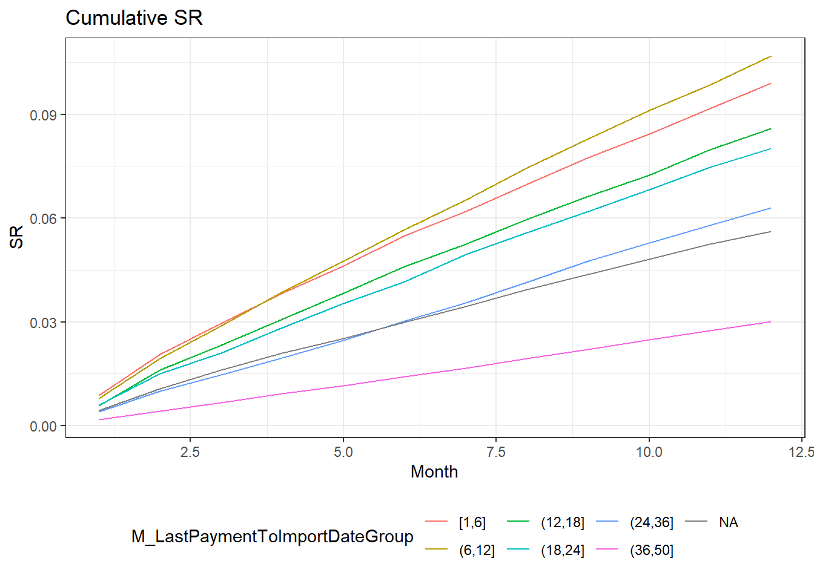

library(data.table)
library(ggplot2)
load("../KrukUWr2022.RData")Lab2_Rozwiazania
Zadanie #1
Sprawdź poprawność danych w zakresie punktów podanych ze slajdu poprawność danych. Na zajęciach wybierz 1-2 punkty.
Składowe zadłużenie
cases[, SumOfToaComponents := Principal+Interest+Other]
cases[, ToaDiff := TOA - SumOfToaComponents]
cases[abs(ToaDiff) >= 0.01, .N][1] 1221cases[abs(ToaDiff) >= 0.01, .(CaseId, Principal, Interest, Other, TOA, SumOfToaComponents, ToaDiff)] CaseId Principal Interest Other TOA SumOfToaComponents ToaDiff
1: 8181661 3035.59 28.43 381.550 3410.57 3445.570 -35.000
2: 8181664 1259.14 250.18 349.484 1823.80 1858.804 -35.004
3: 8181690 1576.35 304.99 413.455 2259.80 2294.795 -34.995
4: 8181693 813.89 136.98 225.889 1141.76 1176.759 -34.999
5: 8181699 2372.45 442.41 639.355 3419.22 3454.215 -34.995
---
1217: 10719832 1497.52 232.58 369.310 2064.41 2099.410 -35.000
1218: 10719846 4192.27 706.98 654.730 5538.98 5553.980 -15.000
1219: 10719878 1985.23 214.51 474.170 2638.91 2673.910 -35.000
1220: 10719893 2000.77 308.45 472.380 2746.60 2781.600 -35.000
1221: 10719911 2322.55 199.90 451.820 2939.27 2974.270 -35.0001221 spraw gdzie różnica między TOA a sumą komponentów zadłużenia jest większa lub równa 1 grosz
Relacja kapitał vs kwota pożyczki
cases[Principal-LoanAmount>0.01, .N][1] 8940cases[Principal-LoanAmount>0.01, .(CaseId, Product, LoanAmount, Principal, Diff=LoanAmount-Principal)] CaseId Product LoanAmount Principal Diff
1: 8086519 Credit card 3635.538 3635.626 -0.0881
2: 8088264 Credit card 22431.882 22432.426 -0.5435
3: 8209367 Credit card 2000.000 2193.310 -193.3100
4: 8209379 Credit card 8000.000 8041.860 -41.8600
5: 8209387 Credit card 2923.000 2945.520 -22.5200
---
8936: 11478349 Credit card 920.000 1187.930 -267.9300
8937: 11478357 Credit card 1200.000 1510.530 -310.5300
8938: 11478361 Credit card 920.000 1109.230 -189.2300
8939: 11478365 Credit card 920.000 1156.240 -236.2400
8940: 11478366 Credit card 920.000 1185.550 -265.5500Liczba spraw, gdzie kapitał do spłaty jest większy niż kwota pożyczki: 8940
Chronologia dat
cases[DPD > D_ContractDateToImportDate, .(CaseId, D_ContractDateToImportDate, DPD)] CaseId D_ContractDateToImportDate DPD
1: 8182216 237 240
2: 8182217 238 240
3: 8182247 260 270
4: 8209955 231 240
5: 8209956 231 240
---
127: 10943607 1016 1073
128: 10943970 877 1108
129: 10944079 821 975
130: 10944139 759 891
131: 10944144 756 898131 spraw z nieprawidłową relacja DPD - liczba dni od podpisania umowy
Relacja zmiennych związanych z egzekucją komorniczą
cases[,.N,by=.(Bailiff, ClosedExecution)] Bailiff ClosedExecution N
1: 0 0 97036
2: 1 0 1777
3: NA NA 6666
4: 1 1 7750Brak relacji, które wskazywałyby na nieprawidłowości w danych.
Relacja wartości w kolumnach związanych z jednostką terytorialną (Land)
# Kolumny: Land, GDPPerCapita, MeanSalary
land_info <- cases[,.N, by=.(Land, GDPPerCapita, MeanSalary)]
setorder(land_info, Land, na.last = TRUE)
# każdy land powienien wystąpić dokładnie raz, jeśli wystepuje więcej razy tzn. że mamy jakieś błędy
sum(duplicated(land_info$Land))[1] 0print(land_info[31:38]) Land GDPPerCapita MeanSalary N
1: 31 5464 1262 1237
2: 32 8011 1591 2137
3: 33 3946 1273 1621
4: 34 4353 1320 1749
5: 35 10507 1772 4529
6: 36 5250 1427 1445
7: 37 3193 1261 1798
8: NA NA NA 4278Są braki danych natomiast nie ma zmultiplikowanych wartości dla pojedynczego landu, więc wszystko wygląda OK.
Relacja wartości w kolumnach związanych z ostatnią wpłatą
cases[LastPaymentAmount<0.0, ]Empty data.table (0 rows and 22 cols): CaseId,LoanAmount,TOA,Principal,Interest,Other...# Brak ujemtnych wpłat - OK
cases[LastPaymentAmount > 0 & M_LastPaymentToImportDate==50]Empty data.table (0 rows and 22 cols): CaseId,LoanAmount,TOA,Principal,Interest,Other...# Brak kwot wpłat tam gdzie liczba miesięcy od ostatniej wplaty przyjmuje sztuczną wartość 50
summary(cases[is.na(LastPaymentAmount), .(M_LastPaymentToImportDate, LastPaymentAmount)]) M_LastPaymentToImportDate LastPaymentAmount
Min. : NA Min. : NA
1st Qu.: NA 1st Qu.: NA
Median : NA Median : NA
Mean :NaN Mean :NaN
3rd Qu.: NA 3rd Qu.: NA
Max. : NA Max. : NA
NA's :11020 NA's :11020 summary(cases[is.na(M_LastPaymentToImportDate), .(M_LastPaymentToImportDate, LastPaymentAmount)]) M_LastPaymentToImportDate LastPaymentAmount
Min. : NA Min. : NA
1st Qu.: NA 1st Qu.: NA
Median : NA Median : NA
Mean :NaN Mean :NaN
3rd Qu.: NA 3rd Qu.: NA
Max. : NA Max. : NA
NA's :11020 NA's :11020 # Brak info w jednej z kolumn gdy druga jest NA. Również OK, choć hipotetycznie mogłoby się tak zdarzyć i to również byloby OKBrak błędów pod kątem wpłat przed importem
Kwoty wpłat z tabeli events
events[PaymentAmount<0, .(CaseId, Month, PaymentAmount, NumberOfPayment)] CaseId Month PaymentAmount NumberOfPayment
1: 8402162 12 -70.8912 1
2: 8402169 12 -133.6418 1
3: 8583386 11 -207.2904 2
4: 9161001 7 -651.3264 2
5: 9658673 7 -212.3892 3
6: 9775661 4 -64.2244 1
7: 9915762 7 -652.9979 1
8: 9922645 7 -640.5800 1
9: 10027472 7 -288.5601 1
10: 10387740 10 -133.9253 1
11: 10939495 3 -244.4070 1
12: 10940968 3 -120.7796 1
13: 10941702 3 -5078.0776 1
14: 10942820 7 -160.8220 1
15: 10943778 3 -1992.7235 1
16: 10944203 7 -17.5434 1
17: 11150096 3 -126.8209 1
18: 11150969 3 -2487.6105 1
19: 11462819 10 -119.3391 1Są sprawy, gdzie są ujemne wpłaty. Należy zdecydować co w takiej sytuacji zrobić. Zostawić, przypisać 0.0 lub rozłożyć ujemne wpłaty na pozostałe dodatnie wpłaty w innych miesiącach dla danej sprawy.
Zadanie #2
Zdiagnozuj kolumny, które najlepiej różnicują (wpływają na) 12 miesięczną skuteczność. Mogą to być kolumny zarówno z tabeli cases jak i events (oprócz liczby wpłat). Z Tabeli events weź informacje z wierszy do max 6 miesiąca.
Użyj tych kolumn do zaprezentowania wybranych charakterystyk dla badanych zbiorów danych. Wynikiem powinna być tabela w formie, jak w przykładzie dla kolumny Product:
| Product | NoOfCases | ShareOfCases | Principal | ShareOfPrincipal* | TOA | ShareOfTOA | AvgDPD | SR6M | SR12M |
|---|---|---|---|---|---|---|---|---|---|
| Loan | |||||||||
| CreditCard | |||||||||
| Total |
* Udział kapitału liczymy jako Principal/TOA dla danej grupy. Jest to sposób inny niż dla pozostałych kolumn “Share”, które obliczamy jako suma dla grupy podzielona przez suma dla całości
Taśma amatorska: rozwiązanie w formie “skryptowej”
Taśma profesjonalna: rozwiązanie przy użyciu własnych funkcji
Wyznaczenie istotnych cech w kontekście wpływu na SR 12M, np. na podstawie współczynników korelacji:
library(data.table)
load("../KrukUWr2022.RData")
source("Lab2_Functions.R")
events[is.na(PaymentAmount), PaymentAmount:=0.0]
payments <- aggregatePayments(events = events, horizons = c(6L, 12L))
setkey(cases, CaseId)
setkey(payments, CaseId)
cases <- cases[payments]
cases[,`:=`(
IsLoan = as.integer(Product == "Cash loan"),
Female = as.integer(Gender == "FEMALE"),
SR6M=SumOfPayments6M/TOA,
SR12M=SumOfPayments12M/TOA)]
cases[, `:=`(
Product=NULL,
Gender=NULL,
SumOfPayments12M=NULL)]
corr_matrix <- cor(x = cases, use = "pairwise.complete.obs")
sort(corr_matrix[,"SR12M"]) M_LastPaymentToImportDate TOA
-0.188815203 -0.145017222
Principal Interest
-0.136213386 -0.134243112
LoanAmount Other
-0.117083121 -0.095351680
DPD ExternalAgency
-0.079223371 -0.056859728
IsLoan Bailiff
-0.053354316 -0.046839665
ClosedExecution MeanSalary
-0.043678719 -0.021200232
PopulationInCity GDPPerCapita
-0.020342823 -0.019497222
Land LastPaymentAmount
0.008348189 0.027709615
Female Age
0.054910075 0.058866696
CaseId D_ContractDateToImportDate
0.073818535 0.079053184
SumOfPayments6M SR6M
0.299926010 0.876125518
SR12M
1.000000000 Tabele z podsumowaniami
# Wybrane cechy do podsumowania (po jednej ze zbioru cases i events):
# SR6M
# M_LastPaymentToImportDate
# Stworzenie grup wg ww cech:
cases[,`:=`(
M_LastPaymentToImportDateGroup = cut(
x = M_LastPaymentToImportDate,
breaks = c(1, 6, 12, 18, 24, 36, 50),
include.lowest=TRUE),
SR6MGroup = cut(
x = SR6M,
breaks = c(-Inf, 0:10/10, Inf),
include.lowest=TRUE)
)]
summarizeCasesByVariable(cases = cases, events = events,
variable_name = "M_LastPaymentToImportDateGroup") M_LastPaymentToImportDateGroup NoOfCases ShareOfCases Principal
1: <NA> 11020 11020 41581913
2: [1,6] 6487 6487 107198012
3: (6,12] 4064 4064 33612928
4: (12,18] 3570 3570 28081063
5: (18,24] 3998 3998 32415081
6: (24,36] 19415 19415 111689281
7: (36,50] 64675 64675 511777924
8: TOTAL 113229 1 866356201
ShareOfPrincipal TOA ShareOfTOA AvgDPD SR6M SR12M
1: 0.8523247 48786469 0.04339744 848.2786 0.02984348 0.05615137
2: 0.8089490 132515161 0.11787733 421.4236 0.05493508 0.09903040
3: 0.8290408 40544360 0.03606577 298.2596 0.05679199 0.10698721
4: 0.8106781 34638981 0.03081270 309.8905 0.04596715 0.08597534
5: 0.8244264 39318346 0.03497518 319.9213 0.04160256 0.08024449
6: 0.8066288 138464292 0.12316931 334.5872 0.03030918 0.06293776
7: 0.7418029 689910908 0.61370227 796.0781 0.01419529 0.03003669
8: 0.7706571 1124178517 1.00000000 647.6455 0.02513525 0.04961012summarizeCasesByVariable(cases = cases, events = events, variable_name = "SR6MGroup") SR6MGroup NoOfCases ShareOfCases Principal ShareOfPrincipal TOA
1: [-Inf,0] 83766 83766 617980196.7 0.7581901 815072897.1
2: (0,0.1] 15110 15110 190710198.4 0.8008069 238147537.9
3: (0.1,0.2] 5499 5499 34446396.1 0.8181920 42100625.5
4: (0.2,0.3] 2358 2358 8760106.2 0.8099533 10815569.3
5: (0.3,0.4] 1381 1381 3441454.8 0.8049743 4275235.8
6: (0.4,0.5] 841 841 2259009.9 0.8090227 2792270.1
7: (0.5,0.6] 602 602 1455708.1 0.7914286 1839342.3
8: (0.6,0.7] 501 501 1545748.2 0.7918321 1952116.0
9: (0.7,0.8] 814 814 1977502.3 0.8076950 2448327.9
10: (0.8,0.9] 987 987 1583757.2 0.8068244 1962951.5
11: (0.9,1] 812 812 1404951.5 0.7878127 1783357.2
12: (1, Inf] 558 558 791171.2 0.8005481 988286.9
13: TOTAL 113229 1 866356200.5 0.7706571 1124178517.4
ShareOfTOA AvgDPD SR6M SR12M
1: 0.7250386700 680.5406 -1.195404e-05 0.007819501
2: 0.2118413883 579.4742 3.613194e-02 0.083930012
3: 0.0374501245 530.3334 1.379048e-01 0.261951066
4: 0.0096208646 496.7155 2.409622e-01 0.436176921
5: 0.0038029866 467.6881 3.441501e-01 0.616309714
6: 0.0024838316 520.0481 4.451631e-01 0.692954822
7: 0.0016361657 501.7479 5.538667e-01 0.732149709
8: 0.0017364822 538.3442 6.506287e-01 0.721319896
9: 0.0021778818 604.7278 7.492536e-01 0.778969260
10: 0.0017461208 546.8969 8.496062e-01 0.858357695
11: 0.0015863648 579.3043 9.512476e-01 0.952887817
12: 0.0008791192 611.7736 1.060154e+00 1.060068211
13: 1.0000000000 647.6455 2.513525e-02 0.049610121Zadanie #3
Napisz funkcję, która przyjmie jako argumenty (1) wektor oraz (2) metodę przekształcenia danych w tym wektorze. W zależności od wartości z argumentu (2) funkcja zwróci:
wektor zestandaryzowany (średnia=0, wariancja=1)
wektor znormalizowany (przekształcenie wartości zmiennej na odcinek [0, 1])
wektor zlogarytmowany
wektor spierwiastkowany
Wyznacz macierz współczynników korelacji między wybraną zmienną o wartościach oryginalnych i jej wartościami przekształconymi. Chodzi o wybrana zmienną numeryczną z tabeli cases.
transformVariable <- function(x, method, na.rm=TRUE) {
if(method == "standardize") {
y <- standardize(x = x, na.rm = na.rm)
} else if(method == "normalize") {
y <- normalize(x = x, na.rm = na.rm)
} else if(method == "log") {
y <- log(x)
} else if(method == "sqrt") {
y <- sqrt(x)
} else {
stop("Unknown method.")
}
return(y)
}
standardize <- function(x, na.rm=TRUE) {
y <- (x - mean(x, na.rm=na.rm)) / sd(x, na.rm=na.rm)
return(y)
}
normalize <- function(x, na.rm=TRUE) {
y <- (x - min(x, na.rm=na.rm)) / (max(x, na.rm=na.rm) - min(x, na.rm=na.rm))
return(y)
}
# sprawdzenie
summary(transformVariable(cases$TOA, method = "standardize")) Min. 1st Qu. Median Mean 3rd Qu. Max.
-0.7213 -0.5817 -0.3949 0.0000 0.1360 6.5436 summary(transformVariable(cases$TOA, method = "normalize")) Min. 1st Qu. Median Mean 3rd Qu. Max.
0.00000 0.01921 0.04493 0.09929 0.11801 1.00000 summary(transformVariable(cases$TOA, method = "log")) Min. 1st Qu. Median Mean 3rd Qu. Max.
-3.912 7.561 8.410 8.411 9.376 11.513 summary(transformVariable(cases$TOA, method = "sqrt")) Min. 1st Qu. Median Mean 3rd Qu. Max.
0.1414 43.8339 67.0261 83.0661 108.6302 316.2227 cor(cases$TOA, transformVariable(cases$TOA, method = "standardize"))[1] 1cor(cases$TOA, transformVariable(cases$TOA, method = "normalize"))[1] 1cor(cases$TOA, transformVariable(cases$TOA, method = "log"))[1] 0.7656594cor(cases$TOA, transformVariable(cases$TOA, method = "sqrt"))[1] 0.9535541Zadanie #4
Wyznacz krzywe skuteczności wyników w horyzoncie 12 miesięcy w rozbiciu na grupy wg grup wyznaczonych w zadaniu #2
Wynik jako tabela np.
| Gender | M1 | M2 | M3 | M4 | M5 | M6 | M7 | M8 | M9 | M10 | M11 | M12 |
|---|---|---|---|---|---|---|---|---|---|---|---|---|
| F/M |
source("Lab2_Functions.R")
payments <- aggregatePayments(events, horizons = 1L:12L)
groups <- cases[,.(
CaseId,
TOA,
M_LastPaymentToImportDateGroup = cut(
x = M_LastPaymentToImportDate,
breaks = c(1, 6, 12, 18, 24, 36, 50),
include.lowest=TRUE)
)]
setkey(payments, CaseId)
setkey(groups, CaseId)
payments <- payments[groups]
sr <- payments[, .(
M1 = sum(SumOfPayments1M)/sum(TOA),
M2 = sum(SumOfPayments2M)/sum(TOA),
M3 = sum(SumOfPayments3M)/sum(TOA),
M4 = sum(SumOfPayments4M)/sum(TOA),
M5 = sum(SumOfPayments5M)/sum(TOA),
M6 = sum(SumOfPayments6M)/sum(TOA),
M7 = sum(SumOfPayments7M)/sum(TOA),
M8 = sum(SumOfPayments8M)/sum(TOA),
M9 = sum(SumOfPayments9M)/sum(TOA),
M10 = sum(SumOfPayments10M)/sum(TOA),
M11 = sum(SumOfPayments11M)/sum(TOA),
M12 = sum(SumOfPayments12M)/sum(TOA)
), by = M_LastPaymentToImportDateGroup]
setorder(sr, M_LastPaymentToImportDateGroup)
print(sr) M_LastPaymentToImportDateGroup M1 M2 M3
1: <NA> 0.004323764 0.010716425 0.016119502
2: [1,6] 0.008670007 0.020600958 0.029581444
3: (6,12] 0.007874764 0.019503440 0.028842853
4: (12,18] 0.005821407 0.016147331 0.023350378
5: (18,24] 0.005973757 0.014966069 0.021061829
6: (24,36] 0.004048844 0.009901650 0.014757103
7: (36,50] 0.001774819 0.004239894 0.006689124
M4 M5 M6 M7 M8 M9
1: 0.021020403 0.02525540 0.02984348 0.03451830 0.03940175 0.04377450
2: 0.038410040 0.04622371 0.05493508 0.06203398 0.06982299 0.07750687
3: 0.038633122 0.04753563 0.05679199 0.06532656 0.07459148 0.08288827
4: 0.030759417 0.03833655 0.04596715 0.05254962 0.05972901 0.06638663
5: 0.028283294 0.03541865 0.04160256 0.04945435 0.05591312 0.06200976
6: 0.019572177 0.02458672 0.03030918 0.03556663 0.04138819 0.04755653
7: 0.009236192 0.01158163 0.01419529 0.01667617 0.01941207 0.02207724
M10 M11 M12
1: 0.04808467 0.05249258 0.05615137
2: 0.08443826 0.09165608 0.09903040
3: 0.09115322 0.09861053 0.10698721
4: 0.07248825 0.07979404 0.08597534
5: 0.06827560 0.07474388 0.08024449
6: 0.05283035 0.05789652 0.06293776
7: 0.02477983 0.02741491 0.03003669lub
| Month | Female | Male |
|---|
Zadanie #5
Wyniki z zadania 5 przedstaw w formie wykresu / wykresów.
sr_long <- melt(data=sr, id.vars="M_LastPaymentToImportDateGroup", variable.name = "Month", value.name = "SR")
sr_long[,Month:=as.integer(sub("M", "", Month))]
library(ggplot2)
ggplot() +
geom_line(data = sr_long, aes(x = Month, y = SR, color = M_LastPaymentToImportDateGroup, group = M_LastPaymentToImportDateGroup)) +
ggtitle("Cumulative SR") +
theme_bw() +
theme(legend.position = "bottom")